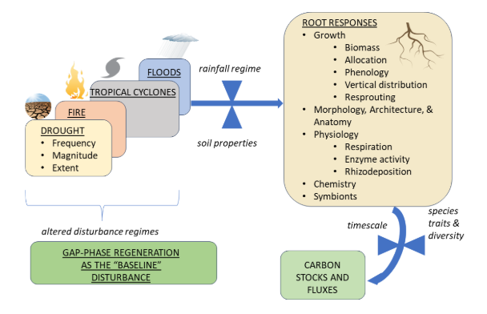
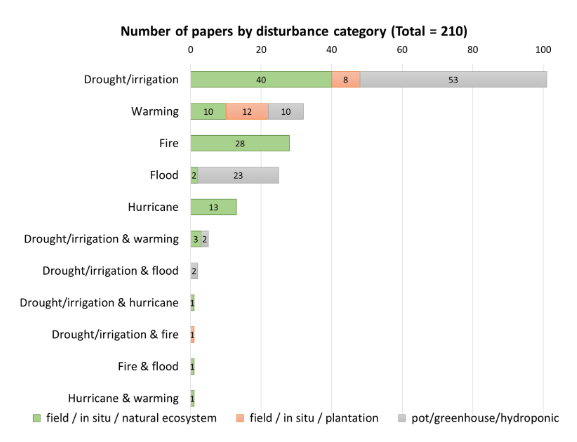

First TropiRoot in-person Workshop!
Panama, 2023
Panama, 2023
Interes@dos en la investigación de raíces! Descubre videos instructivos aqui:
Publicacións de TropiRoot
Cobertura mediática de TropiRoot
.png)
Tropical Roots and Disturbance (TropiRAD)

The main goal of the Tropical Roots and Disturbance (TropiRAD) project is to understand the effects of natural disturbance on root dynamics and traits, and their implications for carbon stocks and fluxes in tropical ecosystems.
Jennifer S Powers, Daniela F Cusack, Amanda L Cordeiro, Kelly Andersen, Daniela Yaffar, Laynara Lugli and Jennifer Holm.
Prior to this project, the TropiRoot group compiled over 8,000 new rows of tropical root data from 104 published sources, increasing tropical root data in the existing Fine Root Ecology Database (FRED) by approximately 33%. For TropiRAD, we collaborated with librarians and developed new methods to conduct a formal systematic literature search and published the protocol in the Open Science Framework (OSF). We found 3,241 new studies, which after review were narrowed to 210 identified as suitable for data extraction. The majority of published tropical papers focus on drought (101), followed by warming (32), fire (28), flooding (25), hurricanes (13) and mixed disturbances (11). Of these, 99 papers are from in situ natural ecosystems, 21 from in situ plantations, and 90 from greenhouse experiments. We finished extracting data from ~70 % of these papers. Once data extraction is complete, the next step is to conduct a quantitative meta-analysis to systematically quantify patterns of root responses to disturbance using the newly extracted data. These findings will help to guide future modeling efforts and improve predictions of tropical carbon cycling dynamics in response to intensified disturbance regimes.
1- Conduct a formal literature search of tropical root responses to disturbance in collaboration with librarians; 2- Extract and compile available data from published papers; 3- Synthesize tropical root responses to disturbance using quantitative meta-analysis; 4- Synthesize the implications of root responses for carbon stocks and fluxes in tropical ecosystems; 5- Add the root data to the Fine Root Ecology Database (FRED) to increase tropical root representation in global databases; 6- Improve our understanding and projection of tropical forest-climate feedbacks and integrate this knowledge into modeling efforts, such as with FATES (Functionally Assembled Terrestrial Ecosystem Simulator).Project duration: 2 years (November 2024 to November 2026).